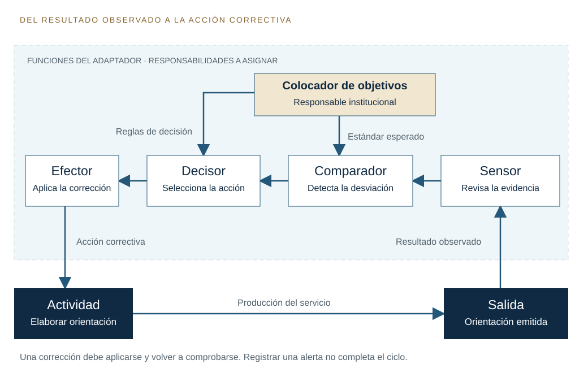
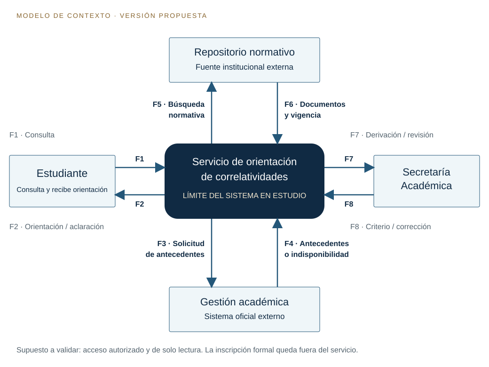
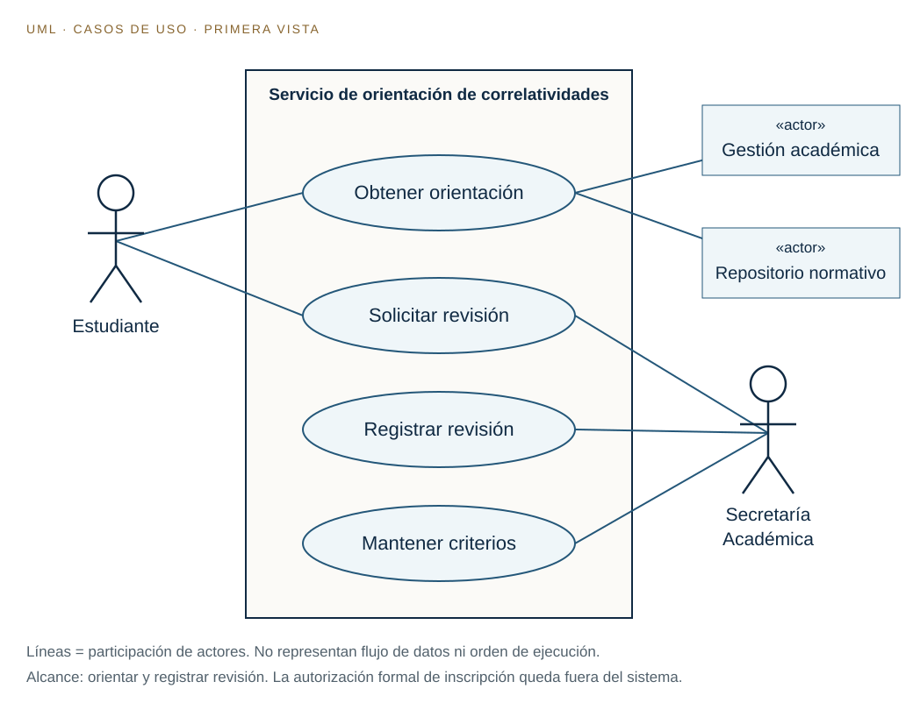

01 · Continuidad del recorrido
De una descripción a un modelo justificable
La clase anterior nos permitió recortar un problema, delimitar una frontera y reconocer intercambios. Hoy vamos a revisar esa producción y precisar las relaciones, reglas y controles que hacen posible su funcionamiento.
Conservamos el caso de orientación académica y su ejemplo de correlatividades. El recorrido sirve también para otros problemas elegidos por los estudiantes: lo que debe trasladarse es el modo de razonar y justificar las decisiones.
¿Cómo demostrar que nuestro modelo representa el sistema que necesitamos y que sus controles sostienen el objetivo?
Al finalizar, podremos
- revisar el análisis de la clase 12 con decisiones fundamentadas;
- distinguir estructura, organización y funciones de control;
- explicitar supuestos y límites de un modelo;
- construir un contexto y una primera vista UML coherentes entre sí.
Recorrido de trabajo
- 1
Recuperar y resolver
Comparar el trabajo anterior con la resolución orientadora.
- 2
Leer y volver al caso
Desarrollar los capítulos 10, 11 y 12 y convertir cada concepto en una decisión.
- 3
Representar y contrastar
Dibujar el contexto, iniciar UML y recorrer escenarios para encontrar omisiones.
02 · Recuperación y resolución
Volvemos a la ejercitación de la clase 12
Reabrí la consigna anterior y tu producción. Marcá qué decisiones ya justificaste y cuáles quedaron como una lista de palabras. La resolución siguiente es una construcción didáctica posible; no describe un servicio existente del instituto.
Situación: un estudiante necesita interpretar las correlatividades de una materia. Debe relacionar su plan, las reglas vigentes y su historia académica. Una respuesta equivocada puede confundirlo respecto de su inscripción.
Sistema propuesto: un servicio de orientación con agente de IA que explica requisitos a partir de información autorizada y deriva los casos que exceden su alcance. La autorización de inscripción sigue siendo una decisión institucional externa.
La información dispersa dificulta interpretar un requisito particular. Para confirmar el problema se necesitan consultas anonimizadas, entrevistas y tiempos de atención. La dispersión es una hipótesis del caso, todavía no una medición realizada.
Producir orientación que identifique plan, materia, requisito, fuente y estado de los antecedentes, o una derivación fundada cuando no se pueda concluir.
Dentro: interfaz, coordinación de la consulta, recuperación documental, contraste de requisitos, elaboración de respuesta y registro de revisión. Fuera: estudiante, Secretaría y sistemas oficiales.
En esta versión se supone una consulta autorizada y de solo lectura al sistema académico. Su existencia debe verificarse. Si no fuera posible, habría que cambiar los flujos y declarar que los antecedentes son aportados por el estudiante.
Estudiante, Secretaría, sistema de gestión académica y repositorio normativo institucional. El plan y el calendario son información del contexto; no se confunden con personas que actúan.
Una regla vigente sin antecedentes no resuelve el caso; los antecedentes sin la regla tampoco. La orientación depende del cruce y de una explicación cuya validez se controle.
El sistema institucional de orientación contiene al servicio propuesto. Dentro de este, el subsistema de verificación tiene entradas, transformación, resultados y controles propios, compatibles con el objetivo general.
Normas contradictorias, antecedentes incompletos, equivalencias excepcionales y falta de disponibilidad del sistema académico. Cada perturbación requiere una conducta prevista.
Resolución del intercambio y el feedback
Consulta, materia, plan, antecedentes autorizados y documentos con vigencia identificada.
Identificar la consulta, recuperar fuentes, contrastar condiciones y preparar una explicación revisable.
Orientación con fundamento y limitaciones, pedido de información faltante o derivación.
Secretaría devuelve una corrección fundamentada; se revisa la respuesta afectada y se comprueba el ajuste en un nuevo caso de prueba.
Guardar comentarios no cierra por sí solo el circuito de control. Debe existir un responsable que interprete el retorno, decida una acción y verifique su efecto. Tampoco se supone que recibir una corrección reentrene automáticamente el modelo de IA.
Cinco preguntas que siguen abiertas
- ¿Quién certifica qué versión normativa está vigente?
- ¿Qué antecedentes puede consultar el servicio y con qué permiso?
- ¿Quién atiende las derivaciones y cómo confirma su recepción?
- ¿Qué evidencia permitirá evaluar una orientación correcta?
- ¿Qué datos se conservarán para revisar el funcionamiento?
Fundamentación recuperada: capítulo 7 para justificar frontera y área gris; capítulo 8 para explicar el resultado conjunto y los niveles; capítulo 9 para representar transformación e información de retorno. Hoy agregamos cómo se vinculan las partes, quién controla y qué oculta el modelo.
03 · Lorenzón · Primera parte
La estructura y organización del sistema
Lectura: pp. 121–143. Foco en estructura y organización (121–124), relaciones y desagregación (125–134), redes de ejecución y control (135–137) y contexto (138–139). Texto de Lorenzón ↗
Las partes necesitan relaciones y reglas
En el capítulo 10, Lorenzón diferencia dos dimensiones que conviene reconocer por separado para luego relacionarlas. La estructura refiere a los componentes y a sus interrelaciones. La organización refiere a las reglas y restricciones funcionales que orientan su comportamiento hacia el objetivo. Enumerar componentes deja sin explicar cómo trabajan juntos; describir reglas deja sin explicar qué relaciones permiten cumplirlas.
El ejemplo de la red de carreteras que utiliza el autor ayuda a distinguirlas: los caminos y sus conexiones ofrecen recorridos posibles; las reglas de circulación regulan su utilización. En nuestro caso, conectar un recuperador de documentos con un generador permite producir una respuesta. Exigir que esa respuesta cite una versión vigente establece una condición de funcionamiento. Podemos conservar los componentes y cambiar esa condición, con consecuencias en el resultado.
Estructura del caso
La coordinación puede consultar el repositorio y el sistema académico; el verificador recibe sus resultados; la respuesta vuelve a la interfaz.
Organización del caso
Solo consultar datos autorizados; detener la conclusión ante contradicciones; explicar las fuentes; reservar las excepciones a Secretaría.
Acoplamiento, flujo y conexión
El acoplamiento describe la forma de relación: en serie, en paralelo, por retroacción, por interacción o mediante autoacople. El flujo identifica qué se transfiere: materia, energía o información. La conexión permite precisar la modalidad de asociación. Estas distinciones convierten una flecha genérica en una relación que podemos analizar.
Si una consulta normalizada pasa a la recuperación documental y después a la verificación, reconocemos una relación en serie. Recuperar las reglas y consultar antecedentes puede plantearse en paralelo si ambas operaciones cuentan con los datos necesarios. Una corrección validada que modifica una respuesta posterior introduce retroacción. Son alternativas de diseño del caso, no una arquitectura técnica impuesta por el libro.
| Relación | Qué circula | Consecuencia que debemos estudiar |
|---|---|---|
| Recuperación → verificación | Regla, fuente y versión | Si no se transmite la vigencia, se puede contrastar el caso con una regla inválida. |
| Fuente compartida por varias funciones | Datos normativos comunes | Una actualización afecta a todas las funciones que usan esa fuente. |
| Verificación → coordinación | Estado: verificable, incompleto o contradictorio | El dato modifica la decisión de responder, pedir datos o derivar. |
El tercer ejemplo muestra una conexión que afecta el flujo de control: el resultado recibido cambia la acción siguiente. Por eso, ante una mala respuesta, investigar únicamente al generador puede ocultar la causa. El error pudo comenzar en la identificación del plan o propagarse desde una fuente desactualizada.
Desagregar con un criterio
El autor propone considerar sinergia, recursividad, grado de conexión y cohesión interna al desagregar. Un subsistema debe tener un cometido reconocible y relaciones internas que lo sostengan. Conviene reducir dependencias innecesarias entre subsistemas y conservar una fuerte relación funcional entre los elementos que cumplen una misma responsabilidad.
- Metasistema: orientación académica institucional, que incluye atención humana y procedimientos oficiales.
- Sistema: servicio de orientación con agente de IA.
- Subsistema: verificación de requisitos, con información de entrada, contraste y resultado controlable.
- Proceso: contrastar antecedentes con correlatividades.
- Actividad: comprobar un requisito particular.
- Tarea: comparar el estado de una materia con la condición requerida.
En esa descripción también hay variables, como el estado de cada requisito; parámetros, como la versión normativa mantenida fija durante una consulta; y elementos que cumplen el papel de operadores, al activar cambios en el proceso. En el vocabulario del capítulo, estos papeles dependen de la situación: el parámetro de una consulta puede cambiar al actualizarse el plan.
Ejecución, mando y capacidad de adaptación
La red de ejecución produce el servicio: recuperar, contrastar y explicar. La red de mando y control coordina, compara y decide si continuar. Centralizar las decisiones puede favorecer criterios uniformes, pero también concentrar demoras; distribuirlas exige acuerdos para que las decisiones locales sean compatibles con el objetivo general. Una estructura jerárquica puede reservar políticas generales a la institución y permitir decisiones acotadas en cada proceso.
En el caso, proponer una aclaración de la consulta puede ser una decisión local. Cambiar una correlatividad exige autoridad institucional. Si la misma herramienta que redacta la respuesta pudiera modificar sin revisión la regla con la que será evaluada, se debilitaría el control.
El capítulo relaciona además estructura, complejidad y cambio. Un sistema no se vuelve comprensible solo por dividirlo en muchas cajas: importa cuántas interacciones y estados debemos considerar. Cambiar un buscador puede conservar el objetivo de orientación; agregar la facultad de autorizar inscripciones cambia sustancialmente el alcance y obliga a revisar la identidad del sistema modelado.
Para resolver: si mantenemos todos los componentes, pero permitimos responder con documentos sin fecha, ¿qué cambió? Cambió una restricción de organización; la estructura puede seguir siendo la misma. Si además conectamos un nuevo repositorio, también cambia la estructura.
04 · Lorenzón · Primera parte
El control en los sistemas
Lectura: pp. 144–161. Foco en información y variedad (146–148), tiempos de respuesta (148–150), ciclo básico (152–154) y distribución de funciones (154–160). Texto de Lorenzón ↗
Controlar exige una referencia y una acción
Un sistema puede seguir funcionando y, aun así, alejarse de su objetivo. Que el servicio responda muchas consultas no demuestra que oriente correctamente. Para controlarlo necesitamos definir qué resultado se espera, observar el resultado efectivo, compararlos y actuar sobre las diferencias. La información de retorno adquiere valor de control cuando permite realizar esa regulación.
En nuestro ejemplo, el estándar didáctico será que toda orientación concluyente tenga fuente identificada, vigencia verificada y antecedentes suficientes. El estándar no es una norma real del instituto: es una regla propuesta para evaluar este diseño. Una respuesta fluida que carece de alguno de esos apoyos no satisface el criterio.
Las funciones del ciclo básico
Lorenzón describe la actividad controlada, el sensor, el colocador de objetivos, el discriminador o comparador, el autor de decisiones y el efector. La articulación de las funciones de control constituye el adaptador. Estas funciones no equivalen necesariamente a seis personas o seis programas; una persona puede asumir varias, y una función puede distribuirse.
| Función | Aplicación al servicio | Evidencia observable |
|---|---|---|
| Actividad controlada | Elaborar orientación de correlatividades. | Respuesta emitida y consulta que la originó. |
| Colocador de objetivos | Responsable institucional que fija alcance y criterios. | Reglas aprobadas para responder y derivar. |
| Sensor | Revisión de fuente, versión, antecedentes y devolución humana. | Registro de comprobaciones y corrección recibida. |
| Discriminador | Contraste entre lo observado y el criterio esperado. | Desviación identificada: por ejemplo, fuente no vigente. |
| Autor de decisiones | Coordinación para situaciones previstas; responsable humano para excepciones. | Decisión fundada de detener, corregir o derivar. |
| Efector | Mecanismo que aplica la decisión. | Respuesta corregida, fuente retirada del uso o caso derivado. |

Información, variedad y límites de respuesta
El capítulo relaciona la información con la restricción de alternativas y la regulación de la variedad. Saber a qué plan pertenece la consulta reduce interpretaciones posibles. Saber que existe una equivalencia excepcional cambia las acciones pertinentes. Acumular documentos sin discriminar su procedencia, en cambio, puede dejar la decisión tan incierta como antes.
El control debe disponer de respuestas adecuadas a las situaciones relevantes. Si solo admite «sí» o «no», no alcanza para antecedentes incompletos, fallas de acceso o reglas contradictorias. Agregar las salidas «pedir datos», «informar indisponibilidad» y «derivar» amplía la capacidad de regulación. La derivación debe tener destinatario, motivo y un modo de seguimiento.
El tiempo también forma parte del control
Lorenzón distingue retraso, cuando la reacción comienza después, de rezago, cuando comienza pero el efecto se desarrolla gradualmente. Podemos tener retraso si una norma nueva se carga días después de entrar en vigencia. Podemos tener rezago si la corrección ya comenzó pero alcanza progresivamente las copias documentales utilizadas por el servicio.
Una corrección recibida después de la fecha de inscripción puede ser conceptualmente correcta y operativamente tardía. El diseño debe registrar cuándo se detectó el problema, cuándo se actuó y cuándo se comprobó el resultado. Aquí no fijamos un plazo institucional inventado: su valor debe acordarse con quien atienda el servicio.
Estabilidad, delegación y coordinación
Mantener estabilidad implica sostener el funcionamiento dentro de límites aceptables frente a perturbaciones. La elasticidad alude a la capacidad de permanecer en ese dominio. En el caso, ante una fuente caída, el servicio puede conservar su función de orientar si informa la limitación y ofrece una vía humana; pierde confiabilidad si compensa la falta de datos inventando una respuesta.
Delegar la detección automática de una versión faltante puede ser razonable. Delegar la aprobación de una excepción es otra decisión, con una responsabilidad diferente. Cada función necesita un responsable y una comunicación efectiva con las demás. Un aviso enviado a una bandeja que nadie revisa deja incompleto el ciclo.
Resolución de una perturbación
Hallazgo: una orientación usó una versión anterior del plan. Comparación: incumple la regla de vigencia. Decisión: suspender la conclusión y solicitar revisión. Acción: retirar esa fuente del uso para el caso y corregir la orientación. Verificación: repetir la consulta con la versión validada y registrar el resultado. Corregir el registro sin revisar la respuesta afectada sería insuficiente.
05 · Lorenzón · Primera parte
El modelo como estructura del razonamiento
Lectura: pp. 162–181. Foco en modelos mentales y filtros (162–169), formalización y UML (170–175) y contraste con la realidad (176–181). Texto de Lorenzón ↗
Modelamos desde una perspectiva
El analista interpreta lo que observa a partir de experiencias, conocimientos, valores e intereses. Lorenzón llama la atención sobre esos modelos mentales: antes de producir un esquema ya estamos seleccionando qué problema creemos ver. Esa selección puede ayudarnos a comprender, pero también puede volver invisibles factores importantes.
Frente a una consulta demorada, el estudiante puede percibir dificultad de acceso a la información; Secretaría, exceso de excepciones; quien programa, falta de un buscador. Ninguna de estas miradas basta por sí sola. Si la causa principal fuera una normativa ambigua, agregar un buscador no resolvería esa ambigüedad. La investigación debe permitir revisar la interpretación inicial.
Los filtros del observador
El autor distingue ambientes potencial, operativo, percibido, inferido y valorizado. No son cinco cajas técnicas que debamos implementar: permiten reflexionar sobre cómo seleccionamos factores de la realidad.
- Potencial
- Factores presentes o posibles: cambios de plan, nuevos estudiantes, nuevas modalidades.
- Operativo
- Factores que intervienen actualmente en la situación observada.
- Percibido
- Lo que logramos reconocer durante el relevamiento, como consultas repetidas.
- Inferido
- Lo que suponemos a partir de indicios: por ejemplo, que la dispersión causa la demora.
- Valorizado
- Lo que seleccionamos como significativo para el análisis y sus límites.
En la producción, distinguí tres afirmaciones: «encontramos documentos con fechas distintas» expresa una observación; «esto provoca respuestas contradictorias» plantea una hipótesis causal; «usaremos solo versiones aprobadas» propone una decisión. Confundir estos niveles convierte una suposición en un requisito aparentemente demostrado.
Del modelo mental al modelo formal
Formalizar permite hacer explícita la representación y discutirla con otras personas. Un diagrama, una tabla de reglas o una descripción de un caso de uso hacen visibles relaciones que en una explicación oral pueden quedar implícitas. Para que ayuden, deben indicar su propósito, el sistema representado, su alcance y el significado de los símbolos.
La abstracción selecciona aspectos relevantes y omite otros. Es útil porque vuelve manejable la complejidad, pero introduce límites. El diagrama de contexto nos sirve para discutir quién intercambia qué con el servicio. No alcanza para explicar cómo verifica cada regla o cuánto tarda en atender una derivación. Necesitamos otras vistas cuando esas preguntas pasan a ser relevantes.
UML: un lenguaje para distintas vistas
El capítulo presenta UML y explica por qué un sistema requiere modelos complementarios y distintos grados de detalle. Para este primer acercamiento elegimos casos de uso: nos permiten representar actores externos y finalidades que el sistema les ofrece. Más adelante podremos estudiar estructura de clases o secuencias de interacción cuando el problema demande ese detalle.
El diagrama de contexto del análisis sistémico y el diagrama de casos de uso UML cumplen funciones distintas. Vamos a producir ambos, manteniendo la misma frontera: en contexto rotularemos intercambios de información; en UML relacionaremos actores con casos de uso. Una flecha de datos no se transforma automáticamente en un caso de uso.
Contrastar, acordar y revisar
El acuerdo entre observadores permite trabajar sobre una representación compartida, pero no garantiza por sí solo que sea adecuada. Hay que contrastarla con situaciones y resultados. Una revisión de escritorio puede detectar que falta un actor o una excepción; la validación del comportamiento real requerirá después pruebas con el sistema y evidencia del servicio.
- 1 · ObservarRecuperar consultas y restricciones, distinguiendo datos e inferencias.
- 2 · RepresentarExplicitar frontera, actores, relaciones, reglas y supuestos.
- 3 · ContrastarRecorrer situaciones normales, incompletas y excepcionales.
- 4 · RevisarModificar el modelo cuando la evidencia muestre una omisión.
Un modelo más grande no es necesariamente mejor. La elección debe equilibrar detalle y utilidad. Si omitimos quién valida la vigencia, perdemos una relación decisiva; si dibujamos cada pantalla antes de acordar el objetivo, agregamos detalle sin resolver esa omisión. La calidad depende de la selección de componentes y relaciones y de su contraste con la realidad.
Para resolver: si el diagrama supone una conexión al sistema académico y el relevamiento muestra que no existe, ¿qué corregimos? Primero el supuesto y el modelo: cambia la procedencia de los antecedentes, el flujo de consulta y el grado de certeza posible de la orientación.
06 · Síntesis aplicada
Una estructura funcional para discutir
Esta desagregación abre la caja del servicio. Es una propuesta funcional y no obliga a usar una plataforma específica. Las responsabilidades pueden implementarse con distintos componentes técnicos.
Recibe la consulta y muestra orientación, aclaraciones o derivación.
Conserva el estado de la consulta y decide el próximo paso permitido.
Obtiene información autorizada y verifica requisitos y suficiencia.
Explica el resultado, registra evidencia y aplica correcciones validadas.
Relaciones: interfaz → coordinación: consulta normalizada; coordinación → recuperación: solicitud acotada; recuperación → contraste: reglas y antecedentes; contraste → coordinación: estado de verificación; coordinación → respuesta: decisión y evidencia; respuesta → interfaz: orientación. La revisión devuelve correcciones a la coordinación para una nueva comprobación.
El estado de una consulta puede ser «recibida», «requiere datos», «lista para orientar», «derivada» o «revisada». Aquí nombramos estados para discutir seguimiento; todavía no construimos un diagrama UML de estados.
Puente con la investigación anterior: el artículo de Anthropic ya incluido en la clase 12 diferencia flujos predefinidos y agentes que eligen dinámicamente sus pasos y herramientas. Un recorrido fijo de consulta y respuesta podría implementarse como flujo. La presencia de IA no demuestra por sí sola comportamiento de agente. En este diseño, una posible decisión del agente es elegir si necesita aclarar, consultar otra fuente autorizada o derivar, dentro de límites explícitos.
07 · Primer modelo · Resolución guiada
Diagrama de contexto del servicio
Pregunta que responde: ¿qué queda dentro de la frontera y qué información cruza entre el sistema y su contexto?
- Nombrar el sistema: «Servicio de orientación de correlatividades». El nombre expresa su responsabilidad.
- Ubicar entidades externas: estudiante, Secretaría Académica, sistema de gestión académica y repositorio normativo.
- Dibujar el sistema como una unidad: sus módulos internos quedan reservados para la vista de estructura.
- Rotular los intercambios: consulta, antecedentes autorizados, documentos vigentes, orientación y revisión. Evitar «datos» como única explicación.
- Explicitar supuestos: consulta de solo lectura al sistema académico y acceso a fuentes aprobadas. Deben validarse antes de construir.

| Flujo | Origen → destino | Contenido y condición |
|---|---|---|
| F1 · Consulta | Estudiante → servicio | Materia, plan y datos mínimos autorizados para identificar la situación. |
| F2 · Orientación | Servicio → estudiante | Requisitos, fundamentos y límites; puede incluir pedido de aclaración o aviso de derivación. |
| F3 · Solicitud de antecedentes | Servicio → gestión académica | Consulta acotada a la persona autorizada; sin modificar registros. |
| F4 · Antecedentes | Gestión académica → servicio | Estados académicos y fecha, o señal de indisponibilidad. No contiene una nueva autorización de inscripción. |
| F5 · Búsqueda normativa | Servicio → repositorio | Plan, materia y período para recuperar la regla aplicable. |
| F6 · Documentos | Repositorio → servicio | Reglas y metadatos de fuente y vigencia, o resultado vacío. |
| F7 · Derivación / revisión | Servicio → Secretaría | Motivo, síntesis, evidencia y datos mínimos del caso que necesita intervención. |
| F8 · Criterio / corrección | Secretaría → servicio | Criterios aprobados, devolución fundada y estado de la revisión. |
Por qué esta frontera es defendible
Secretaría pertenece a la institución, pero es externa al software que estamos delimitando. El repositorio normativo también queda fuera porque su administración se realiza institucionalmente; el recuperador que lo consulta queda dentro. El modelo oculta el proveedor técnico de IA porque esta es una vista funcional del servicio: si el análisis posterior aborda infraestructura o circulación de datos hacia terceros, habrá que hacerlo visible en otra vista.
Si representáramos toda la orientación institucional, Secretaría pasaría a ser interna. No sería un error: sería otro recorte. Lo que produciría una inconsistencia sería cambiar la frontera entre diagramas sin avisarlo.
Control de coherencia: no hay flujo para inscribir o modificar notas porque esas acciones están fuera del objetivo. El retorno F8 permite revisar la orientación; si lo quitamos, el circuito de revisión humana pierde su entrada al servicio.
08 · Primer acercamiento a UML
La vista inicial de casos de uso
Pregunta que responde: ¿qué roles interactúan con el sistema y para qué finalidades?
Representamos el límite del servicio con un rectángulo, los casos de uso con óvalos y los actores fuera del límite. Un actor es un rol externo; puede ser una persona o un sistema. La asociación se dibuja aquí con una línea sin flecha: indica participación, no dirección de datos ni orden temporal.

Alcance de los casos: «Obtener orientación» utiliza antecedentes y normas; «Solicitar revisión» registra o comunica un caso que necesita intervención; «Registrar revisión» incorpora la devolución de Secretaría; «Mantener criterios» permite registrar criterios operativos aprobados. Aprobar normas y resolver formalmente inscripciones son actividades institucionales fuera del sistema.
No incorporamos todavía relaciones include o extend. Primero necesitamos comprender finalidad, actores y alcance. Tampoco dibujamos «abrir pantalla» o «ejecutar modelo» como finalidades del estudiante.
Especificación breve · CU-01 · Obtener orientación
- Actor principal
- Estudiante.
- Actores de apoyo
- Gestión académica y repositorio normativo.
- Disparador
- El estudiante consulta requisitos de una materia.
- Precondición
- Consulta dentro del alcance y permiso para acceder a los antecedentes necesarios.
- El estudiante indica materia y plan.
- El servicio solicita los antecedentes permitidos y recupera la regla aplicable.
- Comprueba identidad del plan, vigencia y suficiencia de la información.
- Contrasta cada requisito con los antecedentes.
- Devuelve orientación fundada y registra la evidencia necesaria para su revisión.
Resultado esperado: el estudiante recibe una explicación verificable de requisitos y limitaciones. No se altera su historia académica ni se autoriza una inscripción.
Alternativas: si falta el plan, se solicita aclaración; si falta un antecedente o falla el acceso, se informa qué no pudo verificarse; si hay contradicción o excepción, se ofrece o genera la solicitud de revisión según el criterio autorizado. El diagrama de casos de uso no muestra el orden de estos pasos: esa precisión se encuentra en el texto.
| Contexto | Casos de uso | Regla de coherencia |
|---|---|---|
| F1–F6 | Obtener orientación | Las fuentes externas apoyan la finalidad del estudiante. |
| F1, F2 y F7 | Solicitar revisión | La revisión tiene motivo y destinatario; el aviso al estudiante usa F2. |
| F8 y eventual F2 | Registrar revisión | La devolución puede corregir la orientación y comunicarse al estudiante. |
| F8 | Mantener criterios | Solo se incorporan criterios ya aprobados por el responsable institucional. |
09 · Apoyos audiovisuales
Mirar, identificar y volver al caso
Los videos acompañan el trabajo gráfico. La bibliografía de lectura se mantiene; las decisiones del análisis se fundamentan con Lorenzón. Usá cada recurso para producir una observación concreta sobre tu propio modelo.
Contexto · Fatto Consultoría y Sistemas · 2016
Diagrama de Contexto ↗
Presentación de la finalidad, notación y un ejemplo de diagrama de contexto, publicada por la entidad que imparte el curso.
Antes: escribí el nombre y la frontera de tu sistema. Durante: identificá cómo se distinguen sistema, entorno e intercambios. Después: reemplazá una flecha genérica de tu trabajo por un flujo con nombre preciso.
Respuesta orientadora: «F4 · antecedentes académicos autorizados» permite discutir procedencia y contenido; «datos» no alcanza. Relacioná esta decisión con Lorenzón, pp. 138–139.
UML · Universitat Politècnica de València · 2022
Casos de uso y diagramas de casos de uso ↗
Antonio Garrido Tejero explica la diferencia entre un caso de uso y su representación gráfica. La publicación en YouTube es de 2022; el recurso académico original es de 2021.
Antes: identificá la finalidad del estudiante. Durante: reconocé actores, límite y casos de uso; las relaciones avanzadas quedan para otra instancia. Después: explicá por qué «Obtener orientación» es una finalidad y «documentos vigentes» es información.
Respuesta orientadora: el caso de uso expresa un resultado de valor para un actor. El documento es un insumo para lograrlo. Vinculá la necesidad de vistas complementarias con Lorenzón, pp. 173–175.
10 · Producción individual
Actividad: revisar, modelar y defender
Continuá con el problema elegido en la clase 12. Conservá la versión anterior y elaborá una nueva versión que permita reconocer qué cambió y por qué. Podés dibujar a mano y digitalizar el esquema, o usar una herramienta de diagramación; importa la precisión del modelo.
- 1
Revisá la ejercitación anterior
Recuperá objetivo, frontera, área gris, contexto, sinergia, recursividad, intercambios y perturbaciones. Explicá al menos dos mejoras y conservá cinco preguntas pendientes.
- 2
Desarrollá estructura y organización
Identificá responsabilidades, relaciones y flujos. Escribí tres reglas funcionales. Mostrá dos niveles de desagregación y distinguí ejecución de control. Fundamentá con el capítulo 10.
- 3
Completá el ciclo de control
Elegí una salida a controlar. Indicá estándar, sensor, comparador, decisor, efector y evidencia de corrección. Analizá una demora posible. Fundamentá con el capítulo 11.
- 4
Construí el contexto
Mostrá el sistema como una unidad, entidades externas y flujos rotulados. Agregá un diccionario de intercambios. Declará los supuestos de acceso y la información que queda fuera.
- 5
Iniciá la representación UML
Usá la misma frontera para dibujar actores y casos de uso. Desarrollá uno con disparador, precondición, secuencia, alternativas y resultado. Justificá qué muestra y qué omite cada vista con el capítulo 12.
- 6
Recorré y revisá
Probá en papel un escenario normal, uno con datos faltantes y uno excepcional. Registrá qué actor, flujo o control permitió atenderlo y qué debiste cambiar. Incorporá una observación de cada video aplicada a tus diagramas.
Modelo sistémico revisado + esquema de estructura + ciclo de control + contexto y diccionario de flujos + casos de uso UML y una especificación + tres escenarios + fundamentos por capítulo.
11 · Resolución comentada
Cómo defender el modelo del ejemplo
Los diagramas y tablas anteriores resuelven las partes de estructura, contexto y UML. Completamos ahora la comprobación mediante escenarios. Los nombres y reglas siguientes son ficticios y exclusivamente didácticos; no representan correlatividades oficiales.
Regla de prueba R1: para cursar «Taller B» se requiere tener aprobado «Fundamentos A» en el plan P. Se supone que Secretaría validó la versión V de esta regla para el ejercicio.
Criterio de salida: solo se formula una orientación concluyente si el plan coincide, la regla está vigente y el antecedente necesario está disponible. Toda excepción se deriva.
| Escenario y datos | Recorrido y control | Resultado esperado |
|---|---|---|
| Normal: plan P, regla V vigente, A aprobada. | F1 inicia; F3–F6 aportan información. El verificador contrasta R1 y el generador explica. | «Con los datos disponibles, cumplís el requisito de A para cursar B según V. La inscripción formal se realiza por el procedimiento institucional». |
| Incompleto: se conoce R1, pero no está disponible el estado de A. | F4 informa falta de información. El comparador detecta que no se cumple la condición de suficiencia. | «No puedo determinar si cumplís el requisito: falta verificar el estado de A». No equiparar ausencia de datos con desaprobación. |
| Excepcional: el estudiante indica una equivalencia que no está resuelta en los registros consultados. | La coordinación genera F7 con motivo y evidencia. Secretaría revisa y devuelve F8; después se actualiza el estado y se informa por F2. | Orientación suspendida respecto de ese requisito y revisión identificada. La decisión institucional no se reemplaza por una inferencia del agente. |
Fundamentación por capítulo
10: la separación entre recuperación, contraste y respuesta permite identificar dónde se originó una falla. La prohibición de autorizar inscripciones es una restricción funcional, y las conexiones de solo lectura forman parte de las decisiones de estructura y acceso.
11: «antecedente no disponible» se observa, se compara con la suficiencia requerida y activa una acción distinta. La revisión humana tiene retorno y efecto sobre el caso; registrar el aviso sin seguimiento no bastaría.
12: se declara el supuesto de acceso institucional y se prueban límites del modelo. Si no existe conexión al sistema académico, hay que reemplazar F3–F4, revisar actores de apoyo y limitar la certeza de la orientación. El recorrido de escritorio prueba coherencia, todavía no demuestra funcionamiento real.
Errores frecuentes y cómo resolverlos
- «El sistema es ChatGPT»: reemplazar el nombre de herramienta por la responsabilidad del servicio y explicitar sus límites.
- Secretaría dibujada dentro y fuera: elegir y sostener el mismo recorte en todas las vistas.
- «Internet» como fuente genérica: identificar el repositorio autorizado y los datos que intercambia.
- Flechas sin contenido: nombrar lo que circula y su dirección.
- «Se controla con IA»: indicar referencia, observación, comparación, decisión y acción.
- Casos de uso como pasos internos: recuperar las finalidades de los actores y desarrollar los pasos en el texto.
- Un dibujo presentado como validación: agregar escenarios, supuestos y evidencia pendiente.
Registro de revisión del ejemplo
Antes: «se consultan datos académicos» sin procedencia definida. Ahora: F3–F4 precisan sistema externo, permiso y solo lectura. Antes: «derivar a una persona». Ahora: F7–F8 precisan destinatario, motivo y devolución. Estas mejoras dejan decisiones verificables y nuevos puntos para relevar.
12 · Entrega y revisión
Actualizar el mismo espacio de trabajo
Continuá en el enlace de Drive o GitHub iniciado en la clase 12. Incorporá una sección «Clase 13» y preservá la versión anterior. En el aula virtual compartí el enlace habitual y una síntesis de dos o tres líneas sobre las mejoras realizadas.
Antes de entregar
- el problema está formulado y tiene evidencia o hipótesis identificadas;
- los flujos tienen nombres, dirección y contraparte;
- el control incluye acción y comprobación posterior;
- el contexto y UML mantienen la misma frontera;
- los diagramas son legibles y tienen una explicación;
- los datos de prueba son ficticios o anonimizados.
Este encuentro anticipa estructura, control y modelización del cronograma orientativo. Las próximas instancias podrán profundizar y revisar estas primeras versiones con la evidencia que aporte cada proyecto.
13 · Bibliografía de trabajo
Volver a las fuentes disponibles
Se conserva la bibliografía de la clase 12. La lectura central de este encuentro corresponde a los capítulos 10, 11 y 12 de la primera parte de Lorenzón. Las páginas indicadas son las numeradas en el libro. Los casos, reglas ficticias, esquemas y resoluciones de esta clase son elaboraciones didácticas aplicadas.
Lorenzón, E. E. (2020). Sistemas y organizaciones. EDULP. Parte I: capítulo 10, pp. 121–143; capítulo 11, pp. 144–161; capítulo 12, pp. 162–181. Recuperación de los capítulos 7, 8 y 9.
Registro y texto completo en SEDICI–UNLP ↗Domínguez Coutiño, L. A. (2012). Análisis de sistemas de información. Red Tercer Milenio. Unidad 4. Recuperar el material ya disponible para revisar la formulación del problema.
Material disponible en Google Drive ↗Pollo Cattaneo, M. F. (2018). Resolviendo problemas en los sistemas de información: enfoque para informáticos (4.ª ed.). CEIT. Mantener como referencia del proceso de resolución ya iniciado.
Material disponible en Google Drive ↗NIST (2023). Artificial Intelligence Risk Management Framework (AI RMF 1.0). Referencia ya disponible en la clase 12; sin nueva lectura obligatoria en este encuentro.
Publicación oficial ↗Anthropic (2024). Building effective agents. Recuperar la distinción entre flujos predefinidos y agentes para revisar la ficha de investigación anterior.
Artículo técnico ya disponible ↗
Desarrollo didáctico basado en la obra de Emilio Eugenio Lorenzón (EDULP, 2020), disponible bajo licencia CC BY-NC-SA 4.0. Las adaptaciones de dicha obra en esta clase se comparten bajo la misma licencia. Los recursos audiovisuales conservan sus condiciones de uso.